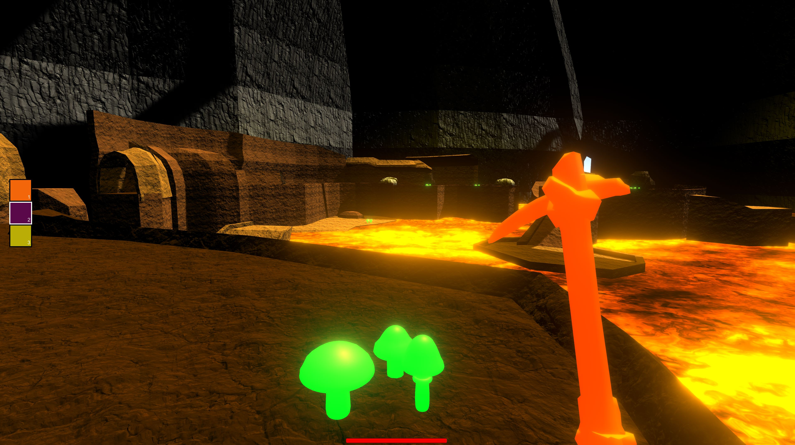

Neanderlands

Github Itch.io
Neanderlands was a semester project for the CSU Monterey Bay Game Developers Club. We gave the player three main tools to help them cross each obstacle in this volcanic enironment: a pickaxe for destroying rocks, a torch for burning vines, and mushrooms regenerate player health.
I assisted in creating the player controls and health, as well as worked on the majority of the UI programming.